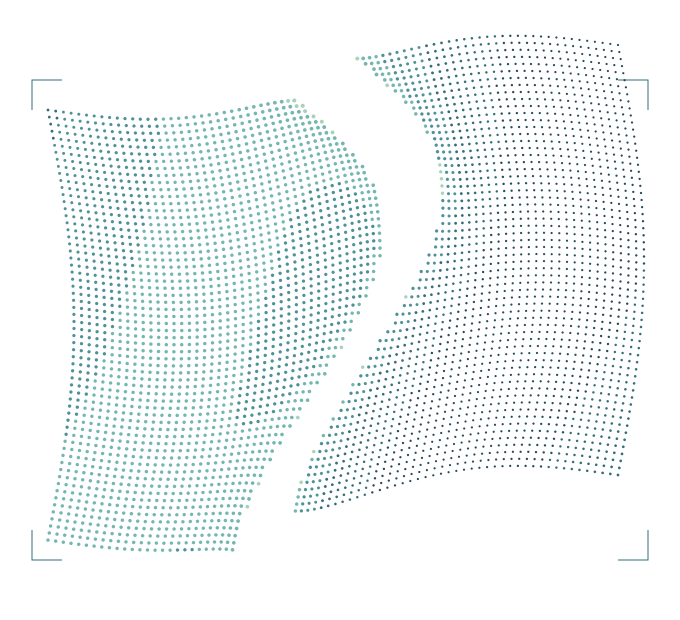
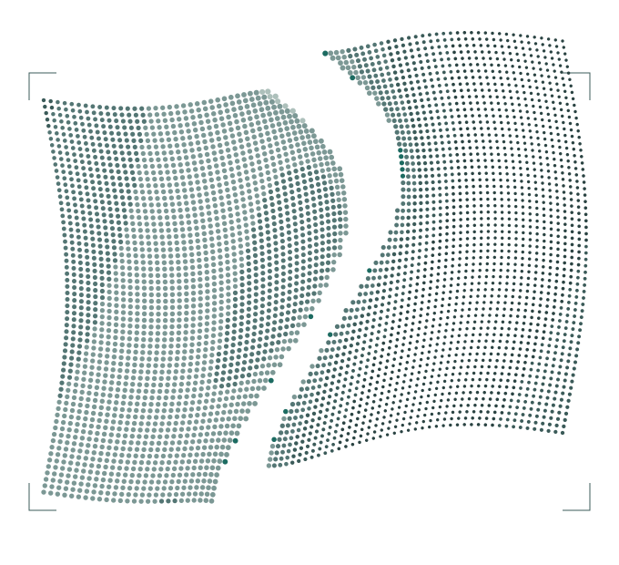

01 · ENLACE DE TEXTO
ESTADOS
ESTUDIO 08 / FASE 1
Seis piezas repetibles, con sus estados. No son controles reales: son muestras estáticas para acordar forma, color y comportamiento antes de construirlos en la página.
Los siete escalones de la rampa pertenecen a la imagen; acá sólo se usan los cinco roles de cada suelo.
SUELO OSCURO · LA ESCENA EMITE
01 · ENLACE DE TEXTO
ESTADOS
02 · ACCIÓN PRINCIPAL
ESTADOS
03 · ANTETÍTULO NUMERADO
01 / UNA FORMA DE HACER
02 / TERRITORIOS POR EXPLORAR
04 · FIGURA CON EPÍGRAFE

05 · PÓSTER EDITORIAL
No es magia.
Es trabajo.
Y criterio.
06 · TABLA SIMPLE
| Familia | Rol | Bytes |
|---|---|---|
| Instrument Serif | Displays | 21 032 |
| Archivo | Lectura | 34 928 |
| Michroma | Firma | 17 908 |
SUELO PAPEL · LA TINTA ABSORBE
01 · ENLACE DE TEXTO
ESTADOS
02 · ACCIÓN PRINCIPAL
ESTADOS
03 · ANTETÍTULO NUMERADO
01 / UNA FORMA DE HACER
02 / TERRITORIOS POR EXPLORAR
04 · FIGURA CON EPÍGRAFE

05 · PÓSTER EDITORIAL
No es magia.
Es trabajo.
Y criterio.
06 · TABLA SIMPLE
| Rol | Suelo | Ratio |
|---|---|---|
| Texto | papel | 15,41 |
| Secundario | papel | 6,59 |
| Señal | papel | 5,50 |